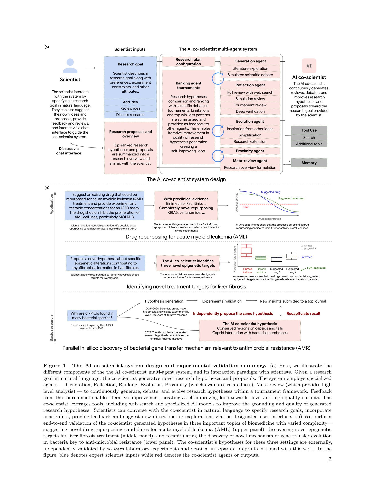
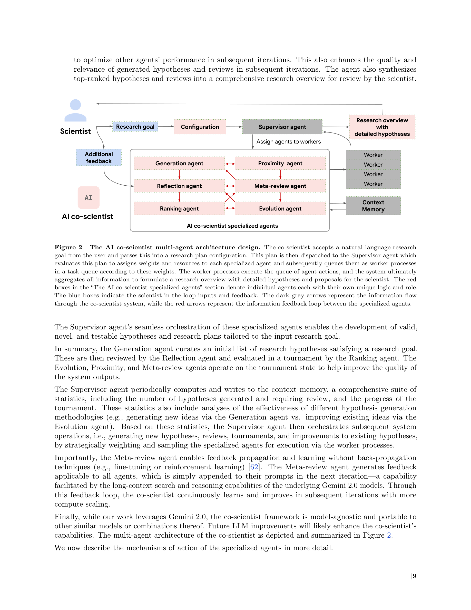
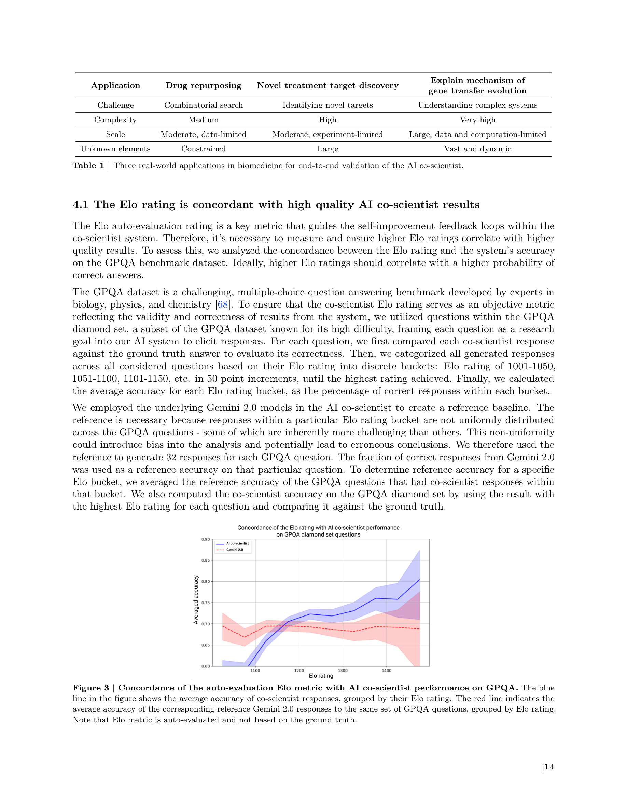
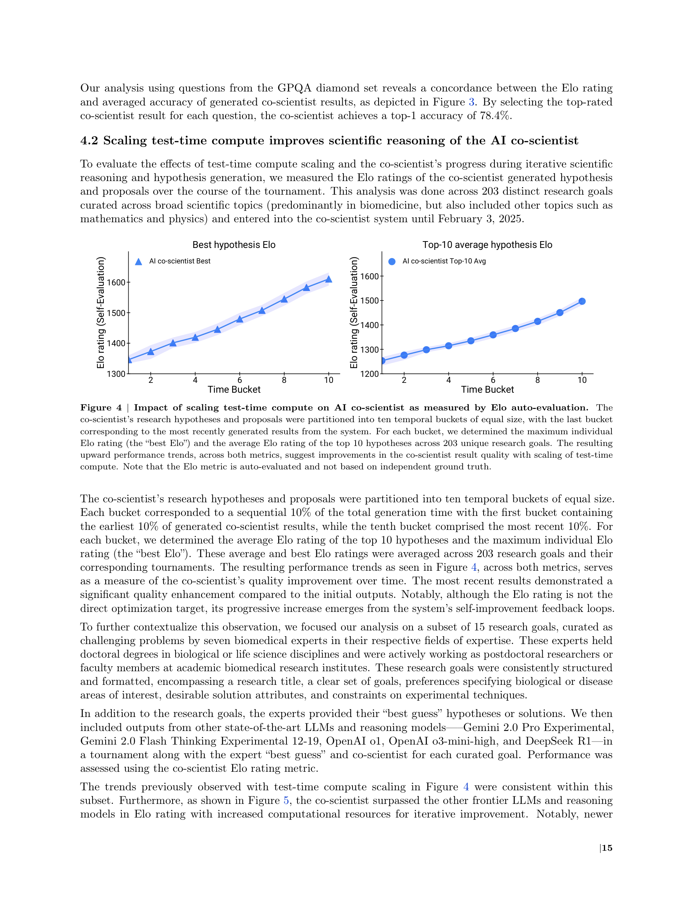

Figure 1
Google이 Gemini 2.0 기반으로 개발한 AI co-scientist는 과학자의 가설 생성 과정을 증강(augment)하기 위한 멀티 에이전트 시스템이다. "생성-토론-진화(generate, debate, evolve)" 접근법을 통해 과학적 방법론을 모방하며, test-time compute 스케일링으로 가설의 품질을 반복적으로 개선한다. 약물 재창출(drug repurposing), 신규 치료 타겟 발견, 항생제 내성 메커니즘 규명의 세 가지 생의학 영역에서 in vitro 실험 검증까지 수행한 end-to-end 시스템이다.

Figure 2
현대 생의학 연구는 깊이(depth)와 넓이(breadth)의 딜레마에 직면해 있다. 분야별 전문성이 심화되는 동시에 학제간 통찰이 중요한 돌파구를 만들지만, 급증하는 논문과 고처리량 분석 기술의 발전으로 한 연구자가 양쪽을 모두 마스터하기 어렵다. CRISPR(2020 노벨화학상)이나 인공지능(2024 노벨물리학상) 같은 학제간 성과가 이를 잘 보여준다. LLM의 추론 능력과 에이전트 행동(agentic behavior) 발전에 힘입어, AI가 과학자의 창의적 가설 생성을 보조하는 협력자(co-scientist)로 기능할 수 있는 시점에 도달했다.

Figure 3

Figure 4
Google의 AI co-scientist는 현재까지 발표된 AI 과학 시스템 중 가장 야심적이고 포괄적으로 검증된 사례이다. 과학적 방법론을 멀티 에이전트 아키텍처로 충실히 구현하고, test-time compute 스케일링이 과학적 추론에도 유효함을 보인 점은 매우 인상적이다. 특히 AML 약물 재창출에서 KIRA6라는 완전 신규 후보 발견, 간섬유증에서 FDA 승인 약물의 재창출 가능성 확인, 미공개 항균 내성 메커니즘의 독립적 재현은 AI 과학 시스템의 실용적 가치를 강력히 시사한다. 그러나 Elo 자기평가의 순환성, 소규모 전문가 평가, in vitro에서 임상까지의 긴 거리 등은 냉정하게 인식해야 할 한계이다. "AI가 과학자를 대체하는 것이 아니라 증강한다"는 설계 철학은 현 시점에서 적절하며, 향후 더 다양한 분야와 더 엄격한 검증을 통해 이 시스템의 진정한 가치가 판명될 것이다. 70페이지에 달하는 방대한 논문으로, AI for Science 분야의 이정표적 연구이다.